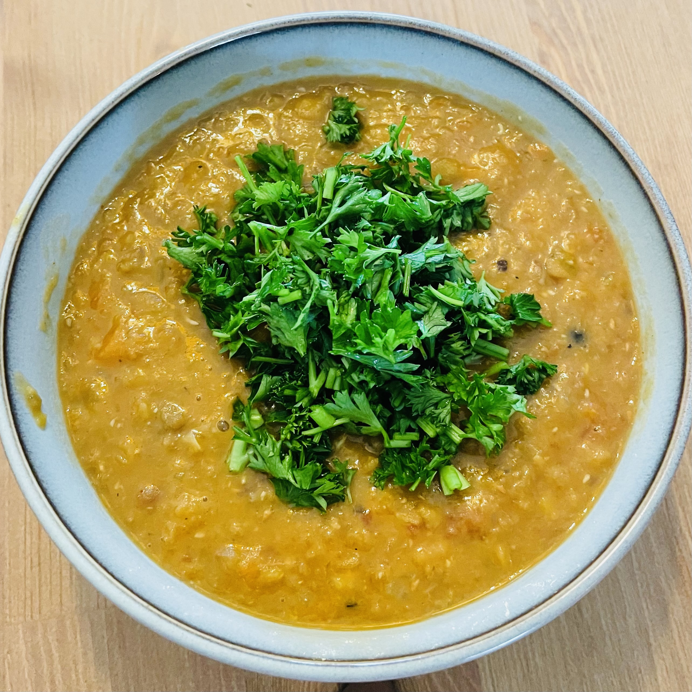

Lentil soup recipe

Delicious lentil soup
This lentil recipe is one of the best nourishing, simple dishes you can make with dried lentils that’s 100% delicious.
Ingredients
- 2 tbsp olive oil
- 1 onion, chopped (white, brown, yellow)
- 2 garlic cloves, minced
- 1 large carrot , chopped (about 1 1/4 cups)
- 2 celery ribs , chopped (about 1 1/4 cups)
- 2 cups / 400g dried lentils , green or brown, rinsed (Note 1)
- 400g / 14 oz crushed tomato
- 1.5 litres / 1.5 quarts (6 cups) vegetable or chicken stock / broth, low sodium
- 1/2 tsp each cumin and coriander powder
- 1 1/2 tsp paprika powder
- 2 dried bay leaves
- 1 lemon (zest + juice)
- 1/4 tsp salt and pepper, each
- Chopped fresh parsley, for garnish (to serve)
- Warm bread, to serve (to serve)
Steps
- Heat oil in a large pot over medium heat. Add garlic and onion, cook for 2 minutes.
- Add celery and carrot. Cook for 7 - 10 minutes or until softened and the onion is sweet. Don't rush this step, it is key to the flavour base of the soup.
- Add all remaining ingredients except the lemon and salt. Stir.
- Increase heat and bring to simmer. Scoop scum on the surface off and discard (do this again during cooking if required). Place lid on and turn heat down to medium low. Simmer for 35 - 40 minutes or until lentils are soft.
- Remove bay leaves.
- Thicken Soup: Using a stick blender, do 2 or 3 quick whizzes to thicken the soup (see video below). Or transfer 2 cups to a blender, let it cool slightly, then hold lid with tea towel and blend then transfer back into pot.
- Add a touch of water if you want to adjust soup consistency. Season to taste with salt and pepper. Grate over the zest of the lemon then add a squeeze of lemon juice just before serving. Garnish with parsley if desired and serve with warm crusty bread slathered liberally with butter!